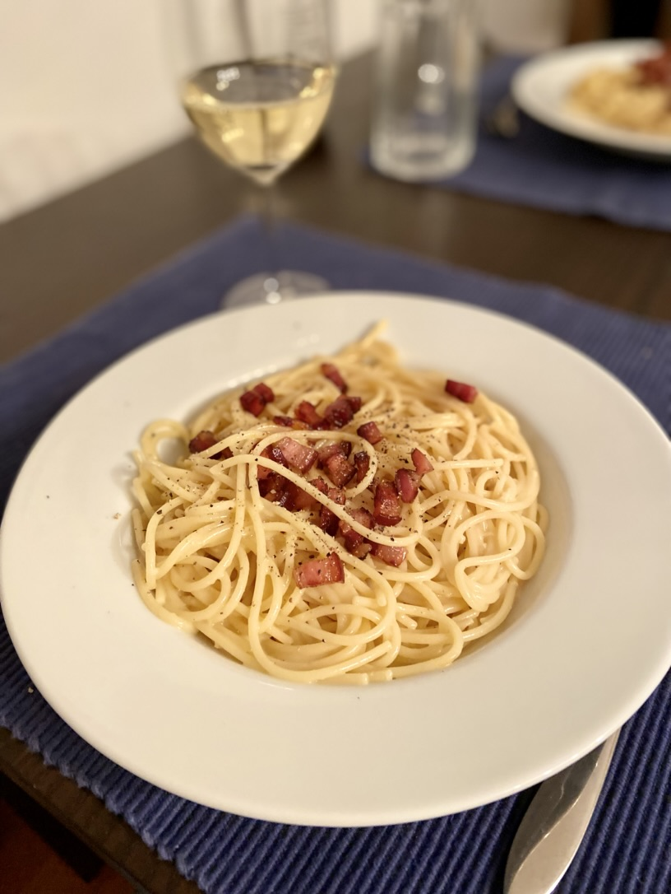

Carbonara

Ingredients
- 350g Spaghetti
- 150g Pancetta
- 2 Eggs (M)
- 2 Egg Yolks
- 125g Parmigiano Reggiano
- 125g Pecorino Romano
- Some Olive Oil
- Some Pasta Water
- Salt
- Black Pepper (freshly grated)
Steps
- Bring a large pot of water to a boil, salt heavily and put in the pasta until al dente.
- Meanwhile, crack two eggs into a large bowl and separate the yolks of the other two eggs. Put them also in the bowl.
- Grate the parmigiano and pecorino into the same bowl and season with black pepper and some salt.
The Mixture should be doughy in texture, not too liquidy.
- Heat olive oil in a pan and fry the pancteta until it is crispy.
- Remove the pancetta from the pan and put it into the bowl with the egg and cheese paste.
- When the pasta is al dente, keep some pasta water in a mug, afterwards drain it.
- Stir the drained pasta in the hot olive oil, then add them to the large bowl as well.
- Gently mix pasta and the egg and cheese paste until the pasta is completely coated in a creamy sauce.
- If the consistency is too thick, add some pasta water sparingly until you get a creamy texture.
- Enjoy while it's still hot!